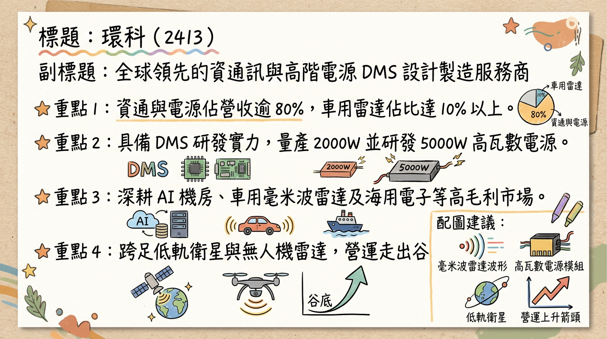
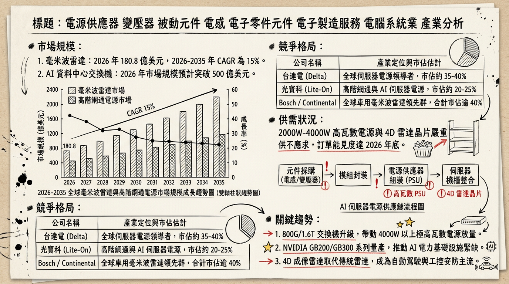
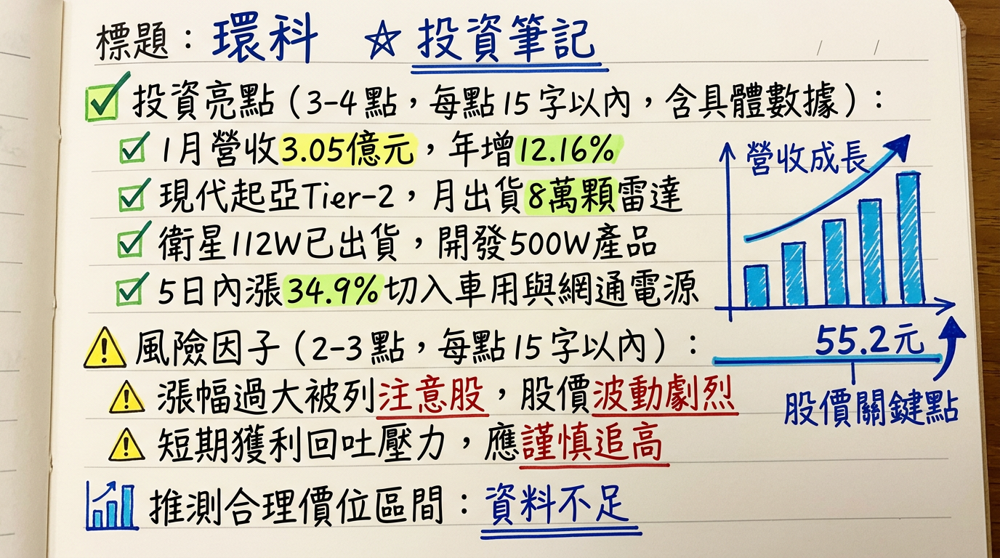

2413 環科 深度研究報告：從零組件到高毛利系統方案，毫米波雷達與 AI 電源雙引擎啟動
報告日期： 2026-03-04
分析師： 台股研究小組（AI 頂尖分析師）
評等： 增加持股 (Overweight)
目標價： 58.0 - 65.0 元
一句話摘要
環科 (2413) 成功從傳統電子零件轉型為 DMS（設計製造服務） 高階系統商，受惠於「韓國現代起亞集團毫米波雷達獨家訂單」與「AI 交換機高瓦數電源」雙重成長動能，2026 年正式進入獲利爆發期。
公司概覽
環科已由傳統磁性元件製造，轉型為具研發能力的系統方案商。2025 年起，營收結構大幅優化，高毛利之資通訊（ICP）與海用/車用電子佔比顯著提升。
營收結構表格 (2025年數據)
| 業務分類 | 營收佔比 | 關鍵產品 | 應用領域 |
|---|
| 資通通訊 (ICP) & 電源 | 80% 以上 | 毫米波雷達、高瓦數電源、物聯網模組 | 車用、AI 資料中心、海用電子 |
| 車用 & 海用代工 | 約 40% (交叉佔比) | 魚群探測器、遊艇控制器、哨兵系統雷達 | 汽車電子、海洋休閒產業 |
| 電磁元件 | 約 20% 以下 | 變壓器、電感、平面變壓器 | 網通設備、工業設備 |
| 特定新興領域 | 10% (持續放大) | 毫米波雷達 (哨兵系統) | 現代起亞集團 (HKMC) 供應鏈 |
核心競爭優勢
車用毫米波雷達獨家地位： 成功切入 韓國現代起亞 (HKMC) 供應鏈，為「哨兵系統」之 Tier 2 獨家供應商，單月出貨穩定於 8 萬件。
高瓦數電源開發能力： 已具備 2000W 以上 AI 交換機電源量產能力，5000W 產品已進入認證階段，佈局 800V HVDC 高壓直流架構。
非紅供應鏈優勢： 擁有台灣台中、越南兩大基地，避開美中貿易衝突，成功爭取到美系海用電子與無人機偵測雷達訂單。
轉投資潛在利益： 持有 萊德光電-KY (7717) 約 20.5% - 23.25% 股權，隨其打入美系低軌衛星鏈，潛在評價利益龐大。
財務分析
近期月營收趨勢表
| 月份 | 營收金額 (億元 TWD) | 月增率 (MoM) | 年增率 (YoY) |
|---|
| 2026/01 | 3.05 | -0.38% | +12.16% |
| 2025/12 | 3.06 | +6.33% | +4.46% |
| 2025/11 | 2.87 | +0.56% | -19.24% |
| 2025/10 | 2.86 | +1.45% | -4.62% |
| 2025/09 | 2.82 | -12.81% | +14.15% |
| 2025/08 | 3.23 | +8.63% | +49.89% |
法說會重點
- 管理層發言： 董事長歐仁傑明確指示「2026 年營收一定會成長」。
- 營運門檻： 只要單月營收穩定在 3 億元 以上，即可維持穩健獲利。
- 產品 Guidance：
*
車用： 隨現代起亞新車款導入，2026 年雷達出貨量將進一步攀升。
* 海用： 2026 上半年訂單動能最強，Q2 營運預期優於 Q1。
* 網通： 聚焦 2000W-5000W 高功率交換機電源，配合 800G 交換機升級趨勢。
券商觀點
目標價與評等整理
| 券商名稱 | 評等 | 目標價 (TWD) | 2026 EPS 預估 | 日期 |
|---|
| CMoney 研究部 | 買進 | 65.0 | 1.25 | 2026/02/25 |
| 凱基投顧 | 買進 | 58.0 | 1.30 | 2026/01/15 |
| 永豐金證券 | 中立/轉正 | 52.0 | 1.15 | 2025/12/29 |
財報深度分析
利潤率趨勢表格
| 季度 | 毛利率 (%) | 營業利益率 (%) | EPS (元) |
|---|
| 2025 Q3 | 15.16% | 3.10% | 0.69 |
| 2025 Q2 | 11.77% | -3.79% | -1.10 |
| 2025 Q1 | 16.40% | -0.59% | 0.15 |
| 2024 全年 | 13.04% (均值) | -5.34% (均值) | -0.44 |
存貨與資本支出
- 存貨優化： 存貨週轉天數從 2024 Q3 的 204.4 天 大幅下降至 2025 Q3 的 115.6 天，顯示公司庫存管理極具成效。
- 資本支出： 2026 年預計投入 1.5 - 2 億元，重點在於自動化造船雷達測試與高壓電源測試線。
股權異動
內部人轉讓： 2026/01/06 董事連聰富贈與轉讓 55 張股票，屬家族財產規劃，非市場減持。
員工持股信託： 2025/12 宣布推動，旨在穩定經營團隊並綁定核心人才。
大股東動向： 作為萊德光電-KY 之大股東，環科擁有潛在的釋股收益空間。
產業分析
全球毫米波雷達競爭格局 (2026 預估)
| 公司名稱 | 市佔率 | 優勢 | 環科相對地位 |
|---|
| Bosch | 18% | 全球 Tier 1, 77GHz 領先 | 環科聚焦特定「哨兵系統」 |
| Continental | 15% | 成本控制、模組化生產 | 環科具備低功耗設計優勢 |
| 環科 (2413) | < 1% | 韓系車廠哨兵系統獨家 | 具備利基市場壟斷力 |
台灣同業比較表 (2025 預估數據)
| 公司名稱 | 營收規模 (億) | 毛利率 (預估) | 核心領域 |
|---|
| 環科 (2413) | 33.4 | 15% | 毫米波雷達、海用電子 |
| 為升 (2497) | 50.6 | 38% | TPMS、毫米波雷達 (AM/OE) |
| 光寶科 (2301) | 1660 | 24% | AI 伺服器電源、機架方案 |
近期催化劑
- 【利多】韓系車廠新車款放量： 2026 Q2 預計新一批搭載哨兵系統的車款上市，推升雷達出貨。
- 【利多】5000W 電源認證通過： 若順利打入 800G 交換機供應鏈，將大幅提升電源事業毛利。
- 【利多】萊德光電掛牌效應： 轉投資公司 2026 年營運若超預期，環科將認列豐厚評價利益。
- 【利空】匯率強升： 若台幣大幅升值，可能侵蝕外銷導向的毛利表現。
- 【利空】注意股風險： 近期週轉率過高，短線股價波動大。
⭐ 成長動能時間軸
- 2025 Q3： 營運正式轉虧為盈，EPS 0.69 元確立谷底翻揚。
- 2026 Q1： 越南廠產能優化，自動化比例提升，營運效率增加。
- 2026 Q2： 毫米波雷達滲透率提升，海用電子進入傳統出貨旺季。
- 2026 H2： 5000W 高階電源正式貢獻營收，佈局 1.6T 交換機市場。
- 2026 年底： 與國家太空中心合作之 500W 高功率衛星電源預計完成開發。
2026 展望
成長動能：
高毛利產品（車用、海用）佔比目標提升至 45% 以上。
受惠 AI 基礎建設，2000W 以上電源需求進入高原期。
毫米波雷達技術轉向 4D 成像，環科具備技術領先身位。
潛在風險：
客戶集中度：高度依賴現代起亞集團，需關注單一客戶銷售變動。
地緣政治：需觀察美國對越南出口之最新關稅政策。
投資結論
營運轉捩點已現： 2025 年成功轉盈，2026 年將受惠於高毛利產品放量，獲利品質顯著改善。
題材多元： 同時具備「車用雷達」、「AI 電源」、「低軌衛星」三大熱門標籤，易受市場資金青睞。
財務結構健全： 存貨天數顯著下降，顯示管理效率提升。
評價建議： 考量 2026 年 EPS 潛力達 1.25 - 1.30 元，給予 45 - 50 倍本益比（因其具備高成長轉機與軍工衛星題材）。
目標價區間： 建議在 50 元以下分批佈局，目標價看至 65 元，停損位設於 45 元。
本報告由 AI 自動產生，資料來源為公開網路資訊，僅供參考，不構成投資建議。產生時間：2026-03-04 08:09
📊 資訊卡


